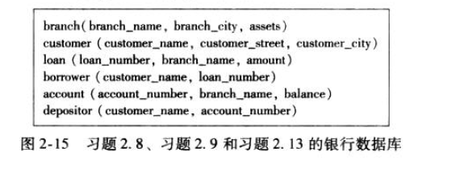

数据库系统概念——第二章课后习题
第二章课后习题
2.9
2.9 考虑图2-15所示银行数据库：
a.适当的主码是什么？
b.给出你选择的主码，确定适当的外码。

答：主码和外码如下图所示：
| 表名 | 主码 | 外码 |
|---|---|---|
| branch | branch_name | 无 |
| customer | customer_name | 无 |
| loan | loan_number | branch_name |
| borrower | loan_number | customer_name、loan_number |
| account | account_number | branch_name |
| depositor | account_number | customer_name、account_number |
2.10
2.10 考虑图2-8所示advisor关系，advisor的主码是s_id。假设一个学生可以由多位指导老师。那么，s_id还是advisor关系的主码吗？如果不是，advisor的主码会是什么呢？

答：s_id不再是advisor的主码。主码变成{s_id , i_id}
2.11
2.11解释术语关系和关系模式在意义上的区别
答：
关系模式是属性序列和属性对应的域组成的。对应于程序设计中的“数据类型定义”。
关系是对于一个关系模式的实例。对应于程序设计中的“变量”。
比如说：studet(name,class)是一个关系模式，而student表是一个关系的实例。
| name | class |
|---|---|
| Tom | 6 |
| Jerry | 6 |
2.12
2.12考虑图2-14所示关系数据库。给出关系代数表达式来表示下列每一个查询：
找出为“First Bank Corporation”工作的所有员工姓名。
找出为“First Bank Corporation”工作的所有员工姓名和居住城市。
找出为“First Bank Corporation”工作且挣钱超过10000美元的所有员工的姓名、街道地址和居住城市。
答：
\(\Pi_{person-name}(\sigma_{company-name=First\ Bank\ Corporation}(works))\)
\(\Pi_{person-name,city}(employee\bowtie\sigma_{company-name=First\ Bank\ Corporation}(works))\)
\(\Pi_{person-name,street,city}(employee\bowtie\sigma_{company-name=First\ Bank\ Corporation \land salary > 10000}(works))\)
2.13
2.13考虑2-15所示银行数据库。对于下列每个查询，给出一个关系代数表达式：
找出贷款额度超过10000美元的所有贷款号。
找出所有这样的存款人姓名，他拥有一个存款额大于6000美元的账户。
找出所有这样的存款人姓名，他在“Uptown”支行拥有一个存款额大于6000美元的账户。
答：
\(\Pi_{loan-number}(\sigma_{amount>10000}(loan))\)
\(\Pi_{customer-name}(depositor\bowtie\sigma_{balance>6000}(account))\)
\(\Pi_{customer-name }(\sigma_{balance>6000\land branch-name = Uptown}(depositor\bowtie account))\)
2.14
2.14列出在数据库中引入空值的两个原因。
答：
- 某个元组属性不存在（比如有的人没有电话号码，使用空值比使用0更加合适）；
b.某个元组属性未知（比如说有的人是有电话号码的，出于隐私保护，不显示出来）;
2.15
2.15讨论过程化和非过程化语言的优点。
答：
过程化语言：用户指导系统对数据库执行一系列操作以计算出所需结果。优点在于用户可以对执行的过程进行指导，在某些情况下会使执行的效率更高；但是需要浪费思考和编程的时间。
非过程化语言：用户只需要描述所需信息，而不用给出获取该信息的具体过程。优点在于抽象程度高，用户只需要直接调用某些操作即可，减少思考和编写的时间，一般情况下都可以达到比较高的执行效率；但是有些情况下效率达不到最优。